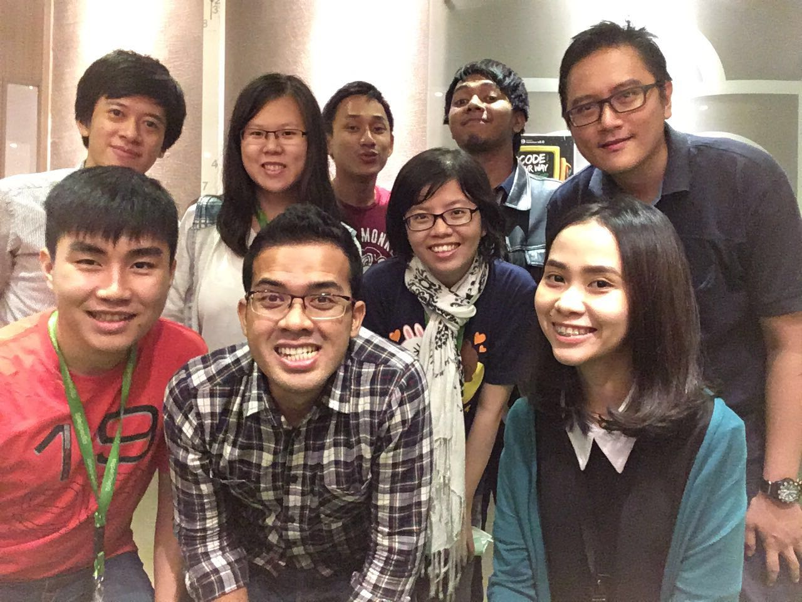

Hello World, I am William
Tentang Saya
Halo, namaku William. Saya bekerja sebagai Quality Assurance atau yang biasa dikenal sebagai QA di salah satu perusahaan E-Commerce terbesar di Indonesia, yaitu Tokopedia.
Saya lahir di Makassar, sebuah kota besar yang terletak di Sulawesi Selatan. Setelah menyelesaikan SMA, saya merantau ke Jakarta untuk kuliah di Universitas Bina Nusantara.
Setelah menamatkan S1 di bidang IT, saya mulai bekerja di Tokopedia pada Mei 2015.
Saya menyukai beberapa kegiatan seperti olahraga, nyanyi, dan membaca. Kegiatan lain yang disukai mungkin bermain game, makan, dan tidur. Itulah singkat cerita tentang diri saya.
Tentang Tokopedia
Tokopedia menurut saya merupakan tempat kerja yang sangat menyenangkan untuk belajar dan bertemu dengan berbagai teman baru. Kantor Tokopedia lebih terasa sebagai rumah,
daripada sebagai tempat kerja. Di Tokopedia, kita diberikan kebebasan untuk belajar apa saja dan banyak sekali yang dapat dipelajari dari teman-teman di Tokopedia, yang biasa kita
sebut sebagai Nakama. Tokopedia memiliki culture kekeluargaan, oleh karena itu setiap karyawan disebut Nakama yang berarti teman yang mewujudkan suatu mimpi yang sama secara bersama-sama.
Divisi IT Tokopedia dibagi menjadi berbagai tim yang fokus terhadap suatu hal spesifik yang berbeda-beda. Saya merupakan anggota dari Tim Chipmunk, yang menangani tentang tiket layanan pengguna dan halaman bantuan di Tokopedia. Kami mengurus halaman Front-End yang digunakan user untuk mencari info seputar Tokopedia dan menanyakan berbagai pertanyaan kepada CS Tokopedia, dan halaman Back-End yang digunakan oleh CS untuk menjawab pertanyaan user, serta oleh tim konten yang mengisi informasi seputar Tokopedia untuk dibaca oleh user.
Ini merupakan penampakan dari tim Chipmunk (gabung tim Conan):

(Gambar Tim Chipmunk dan Tim Conan, ada Copyright, gambar tidak boleh di-copy)
(Gambar Tim Chipmunk dan Tim Conan, ada Copyright, gambar tidak boleh di-copy)
Tim Chipmunk terdiri dari Saya, Calina, Sylvia, Joez, Erhem, Lexys, Alfonz, dan Tito. Semuanya merupakan nakama yang sangat hebat, saya merasa beruntung bisa menjadi bagian dari tim Chipmunk.
QA di Tokopedia
Saya akan menjelaskan sedikit tentang QA. QA merupakan singkatan dari Quality Assurance. Pada awalnya, QA di Tokopedia disebut sebagai QC yang merupakan singkatan dari Quality Control.
Tetapi karena adanya perubahan kewajiban, maka namanya diganti. Kewajiban QA dan QC itu apa, silakan cari sendiri di Google.
QA di Tokopedia singkat kata memastikan Tokopedia selalu dapat diakses kapan saja dan dimana saja, memastikan tidak ada error yang dapat dilihat oleh user, dan memastikan user dapat melakukan kegiatan jual beli dengan lancar di Tokopedia. QA di Tokopedia merupakan pintu terakhir suatu fitur sebelum release dan dapat digunakan di Live oleh user. Jadi, seluruh fitur itu harus sudah beres dan dipastikan baik sebelum digunakan oleh user.
Tim QA di Tokopedia memiliki rasa kekeluargaan yang sangat erat, mungkin karena jumlahnya emang masih dikit sih. Kita biasa melakukan sharing dan merayakan berbagai hal secara bersama. Ini foto beberapa bulann yang lalu, ketika QA masih belum sebanyak sekarang :

(Gambar Tim QA, ada Copyright juga, gambar tidak boleh di-copy)
QA di Tokopedia terbagi menjadi 2, yaitu QA dan Test Engineer yang dipimpin oleh Gautam. QA adalah nakama-nakama yang melakukan testing dalam tiap tim secara langsung, sedangkan Test Engineer adalah nakama-nakama yang membuat suatu program untuk otomatisasi kegiatan testing yang digunakan dalam Tokopedia.
QA merupakan sebuah pekerjaan yang seru, walaupun masih kurang di Indonesia. Namun seiring berkembangnya IT di Indonesia, tenaga QA pasti akan banyak dicari dan dibutuhkan oleh berbagai perusahaan IT di Indonesia.